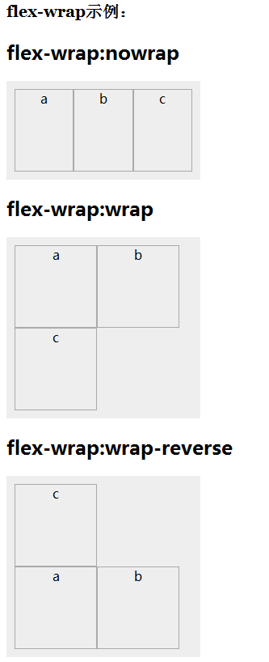

语法：
flex-wrap:取值
说明：
flex-direction 设置或检索弹性盒模型对象的子元素超出父容器时是否换行
| 属性值 | 说明 |
|---|---|
| nowrap | 当子元素溢出父容器时不换行（默认值） |
| wrap | 当子元素溢出父容器时自动换行 |
| wrap-reverse | 反转 wrap 排列 |
使用方法：
flex-wrap:row; /*当子元素溢出父容器时自动换行*/
兼容性：
- 浅绿 = 支持
- 红色 = 不支持
- 粉色 = 部分支持
| 支持版本\类型 | IE | Firefox | Safari | Chrome | Opera |
|---|---|---|---|---|---|
| 较早版本 | 6.0-10.0 | 4.0-25.0 | 5.1.7-6.0 | 21.0-28.0-webkit- | 9.5-12.0 |
| 较新版本 | 11.0 | 7.0-webkit- | 29.0 | 12.1 |
橘色说明要加浏览器的前缀
事例：
<ul id="box3">
<li>a</li>
<li>b</li>
<li>c</li>
</ul>
#box3{display:-webkit-flex;display:flex;width:220px;margin:0;padding:0;list-style:none;-webkit-flex-wrap:nowrap;flex-wrap:nowrap;}
#box3 li{width:100px;height:100px;border:1px solid #aaa;text-align:center;}
